Brendan Harmon, Anna Petrasova, Payam Tabrizian, Vaclav Petras, & Helena Mitasova
Tangible Landscape
A tangible user interface powered by open source GIS
2013-present
Tanigble interaction with GIS
With Tangible Landscape you can hold a watershed in your hands -
feeling the shape of the earth,
sculpting its topography,
and directing the flow of water.
How it works
Tangible Landscape couples a digital and a physical model
through a continuous cycle of 3D scanning,
geospatial modeling, and projection
Realtime 3D scanning
with Kinect sensor
Interactions
surface
points
lines
areas
areas
Applications: erosion control
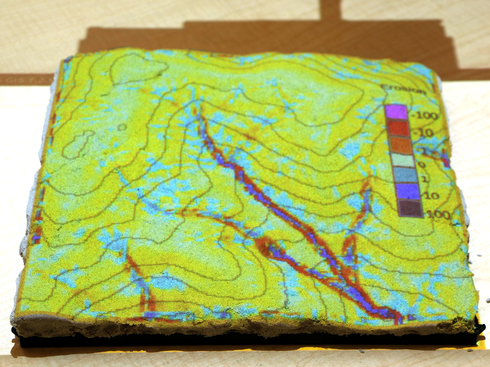
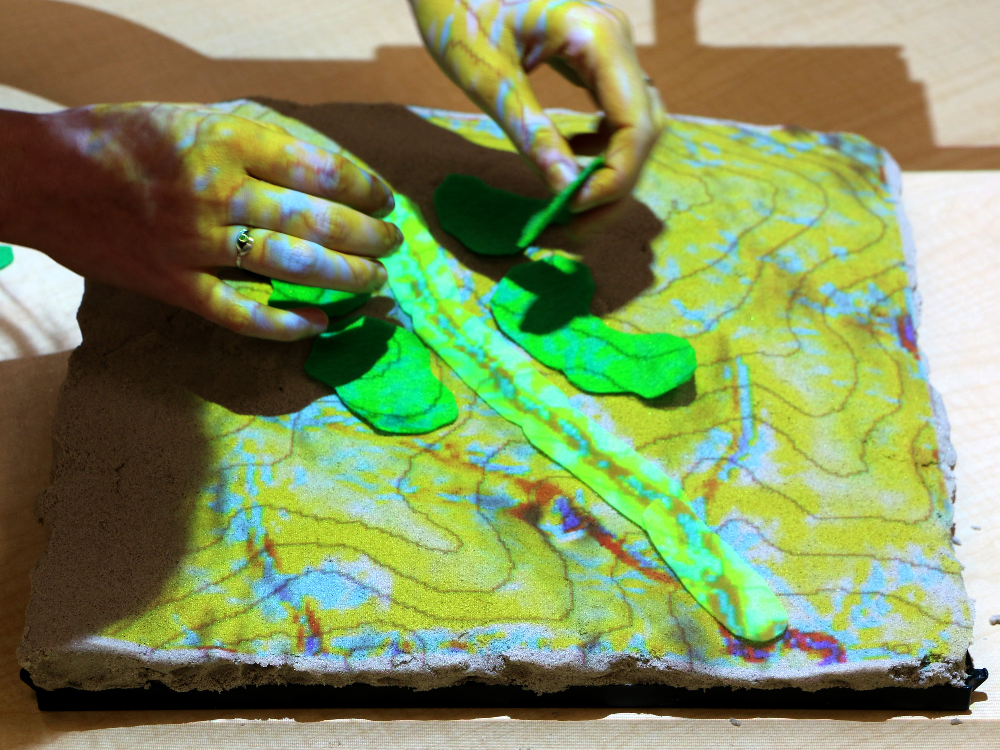
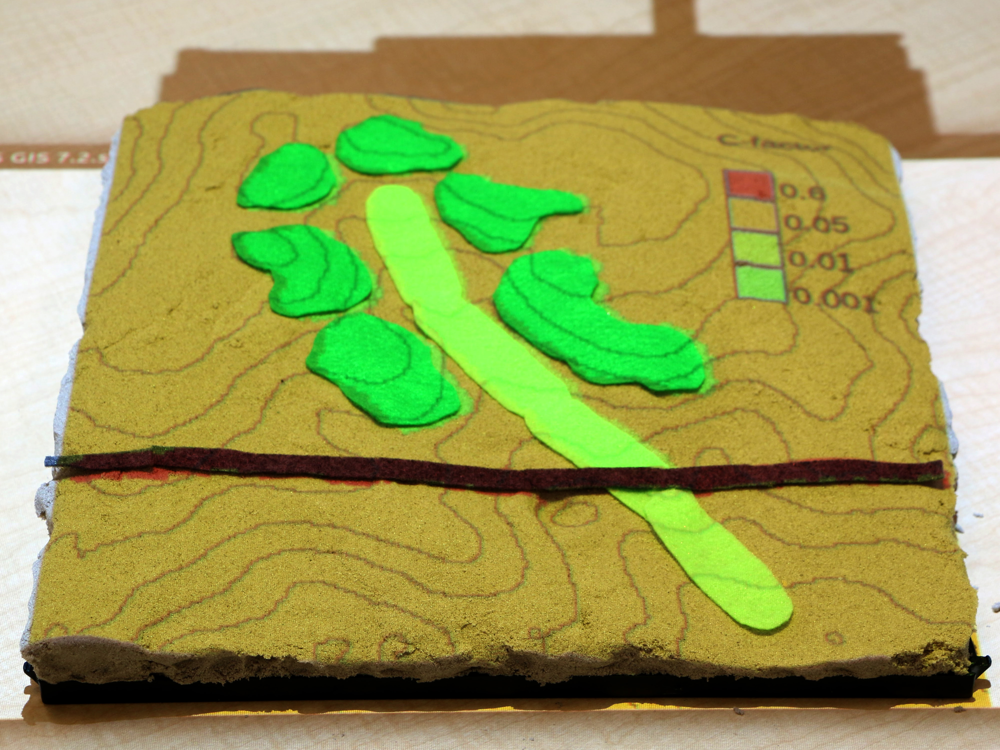
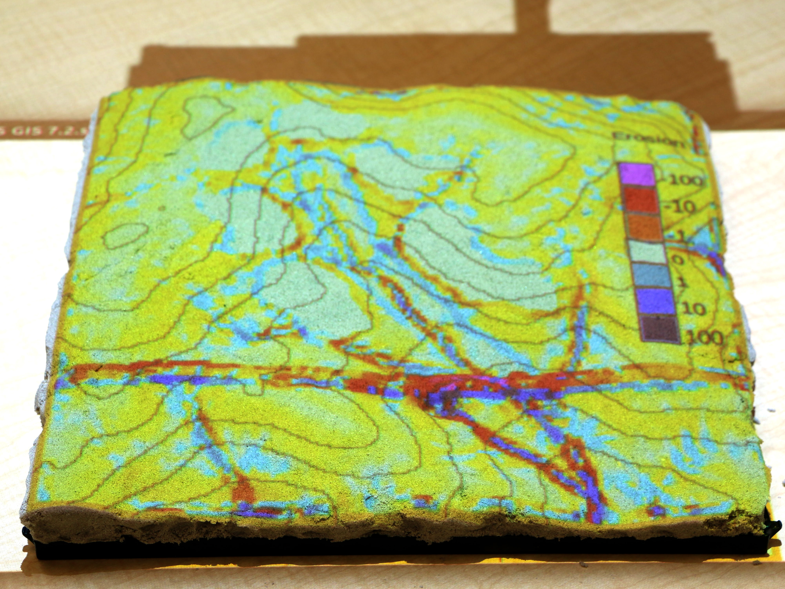
Modifying land cover with colored felt -
adding grass (light green) and patches of trees (darker green)
changes the c-factor thus reducing erosion.
Applications: 3D soil moisture exploration
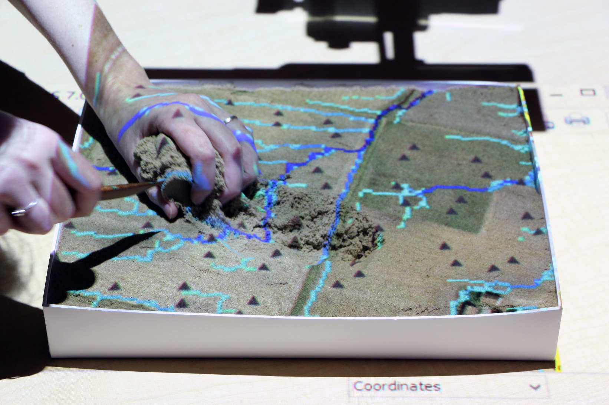
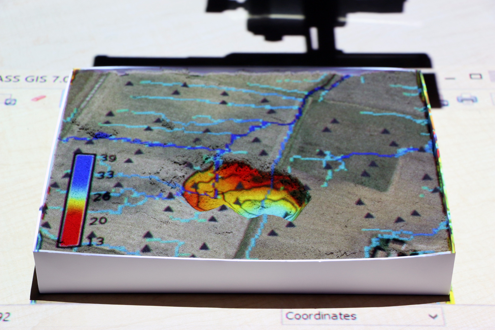
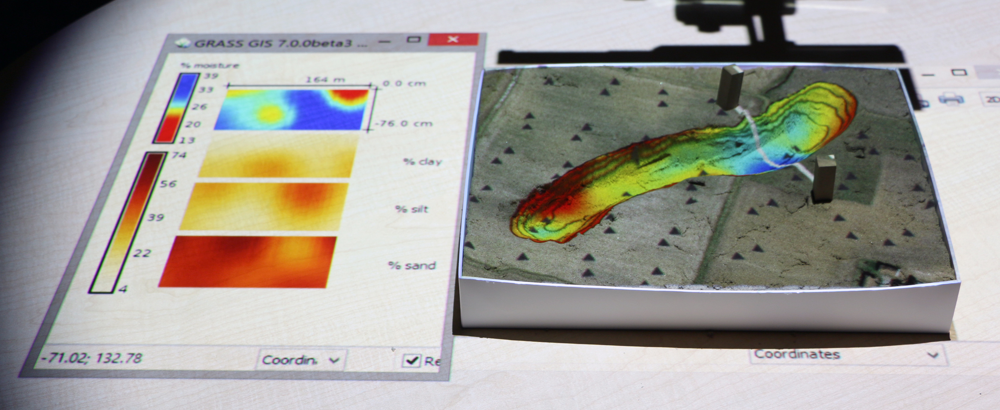
Applications: 3D soil moisture exploration
Exploring subsurface volumes as if digging with an excavator.
Applications: coastal flooding
Building coastal defenses to save homes from storm surge
Motivation for Tangible Interfaces for GIS
Interaction through mouse, keyboard and display does not encourage creativity.
Manipulating computer models is not intuitive and requires specialized software and training.
Collaboration is restricted as typically only one user at a time can navigate and modify models.
Tangible Landscape: real-time coupling with GIS
Tangible Landscape couples a digital and a physical model through
a continuous cycle of 3D scanning, geospatial modeling, and projection.
Interactions
surface
points
lines
areas
areas
Application: erosion control
Sculpting a check dam to retain storm water and reduce erosion
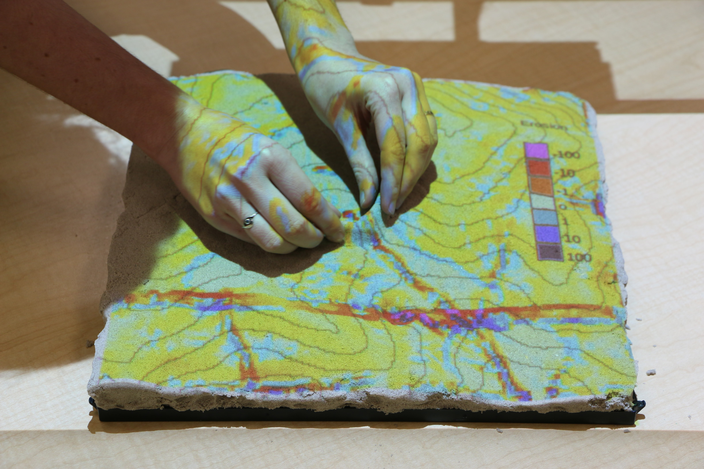
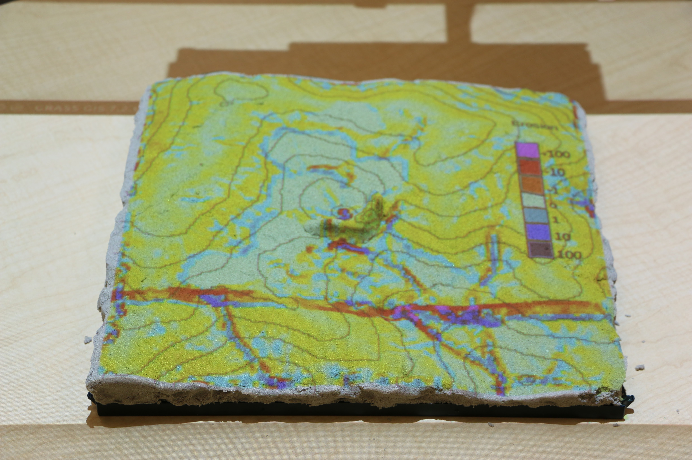
Application: erosion control
Placing colored felt to modify land cover.
Adding grass (light green) and patches of trees (darker green)
changes the c-factor thus reducing erosion.
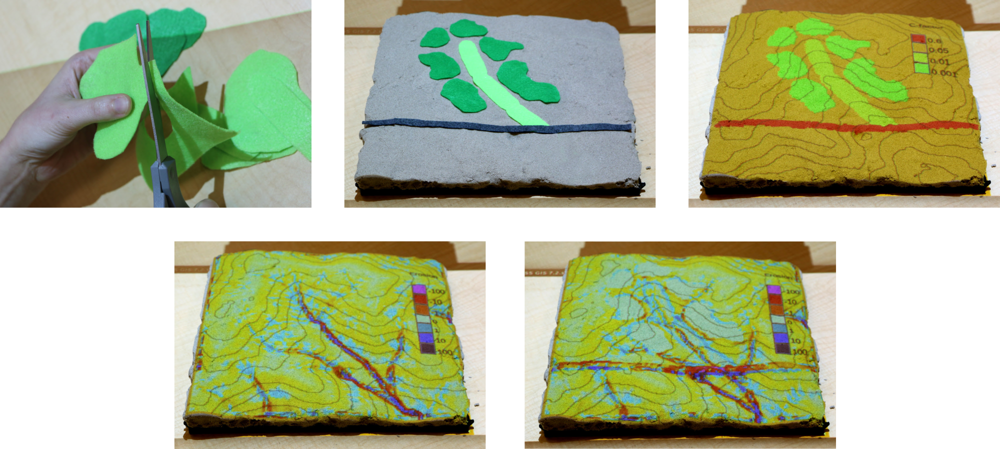
Applications: 3D soil moisture exploration
Serious games: coastal flooding
Save houses from coastal flooding by building coastal defenses
Structured problem-solving with rules, challenging objectives, and scoring
Coupling Tangible Landscape with IVE
Better communicating the implications of landscape change
Including design attributes in landscape planning process
Assessing trade-offs between ecological and experiential quality (e.g., preferences, pyschological well-being)
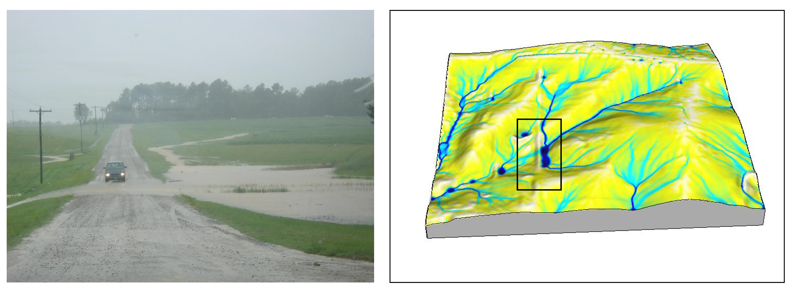
Landform and water bodies
Interaction: hand, sculpting knife 3D processing: terrain GeoTIFF raster and water polygon Simulation: Water flow (r.sim.water), Ponding (r.fill.dir) Projection: Water Surface Area, Mean depth
Vegetated surfaces
Interaction: Felt pieces, laser pointer 3D processing: Importing and populating species classes using the plants library Simulation: Complexity, Heterogeneity, Biodiversity, Remediation capacity, Landscape structure analysis (r.li) Projection: Percent remediated, No of patches, patch richness, Shannon Diversity,
Human views
Interaction: Wooden marker, Laser pointer 3D processing : Importing polyline shapefiles and extrusion based on patch profile, assigning animation and camera path Simulation: Viewshed Feedback: Viewshed area, depth of view, viewdepth variation
Tangible Landscape for communities
Platform for decision-making and science communication
where people of different backgrounds can interact.
Making geospatial data and tools accessible to all